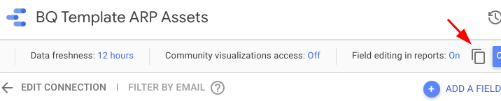
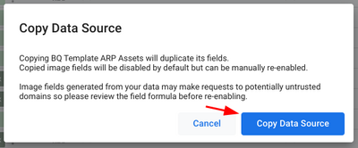
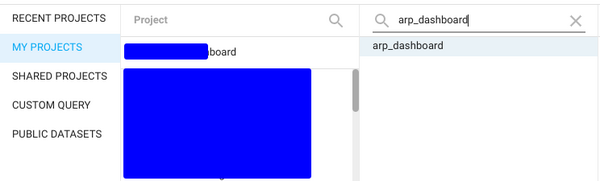
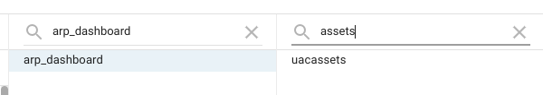
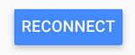
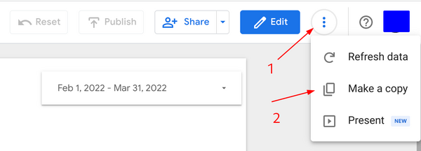
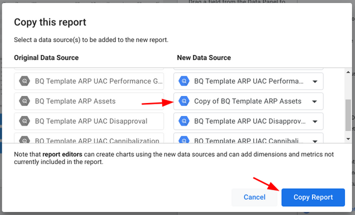
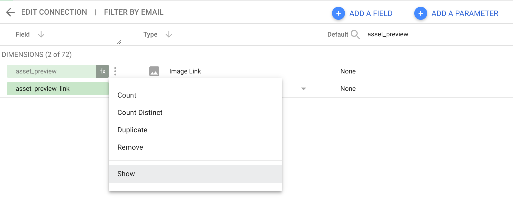

Dashboard
Important
Join app-reporting-pack-readers-external Google group to get access to the dashboard template.
If you install ARP in Google Cloud then in most cases you don't need the following procedure. Otherwise use the following command to clone the ARP dashboard.
Once queries ran successfully you can proceed with dashboard replication.
Run the following command in the terminal to get a link for cloning the dashboard:
bash ./app/scripts/create_dashboard.sh -c app/app_reporting_pack.yaml -L
If you're running on a local machine you can omit -L flag and then the link will be opened in the browser.
Important
After the dashboard is created you need to enable image previews, read details on how it can be done here.
Automatic creation
-
Go to
scriptsfolder -
Run
./create_dashboard.sh -p <YOUR_BQ_PROJECT_ID> -d <YOUR_BQ_DATASET_ID>
where YOUR_BQ_PROJECT_ID and YOUR_BQ_DATASET_ID are the names of the BQ project and dataset that contains App Reporting Pack data.\
You can provide optional arguments to the script:
--name="<YOUR_NAME_FOR_THE_DASHBOARD>"- where YOUR_NAME_FOR_THE_DASHBOARD is the name of the generated dashboard.--lite- if you want to install simplified version of App Reporting Pack
Manual creation
The process of manual replication consists of two steps:
- Replication of datasources
- Replication of dashboard
Replicate datasources
Before replicating the dashboard you need to make copies of datasources that power up the dashboard. Replication of the datasources is important since they contains multiple calculated metrics which could be problematic to create from scratch.
Make a copy of each of the following datasources used in the template dashboard.
- asset_performance
- approval_statuses
- creative_excellence
- change_history
- performance_grouping
- ad_group_network_split
In order to replicate a datasource, please do the following:
-
Click on the datasource link above.
-
Click on Make a copy of this datasource

- Confirm copying by clicking Copy Data Source

-
Select MY PROJECTS and either pick a project or enter project id manually (this should be the project where App Reporting Pack tables are located)
-
In Dataset select a BQ dataset where App Reporting Pack tables are located 
-
Select a table from the dataset which the name similar to Data Source name (i.e., if Data Source is called Assets look for the table which is called assets)

- Confirm copying by clicking RECONNECT button.

Important
Don’t forget to rename the datasource so you can find it easily. I.e. such name as Copy of BQ Template ARP Assets is a bit mouthful, you can name it simply ARP Assets or YOUR-COMPANY-NAME ARP Assets.
- Repeat the steps above for all the datasources.
Now that you’ve copied each of the datasources, make a copy of the dashboard and replace each of the template’s datasources with the corresponding datasource you copied.
Replication of the dashboard
Important
Ensure that ALL datasources are created before proceeding to replication of the dashboard.
Here you can access the template version of the dashboard.
Note
Lite version of the dashboard is also available.
In order to replicate dashboard please do the following:
- make a copy of the dashboard by clicking on More options - Make a copy.

- In Copy this report window map original datasources to the ones you created in the previous step.

Once all template datasources are replaced with new ones, click Copy Report and enjoy your new shiny App Reporting Pack!
Post setup
Grant access
Once the dashboard is saved it's important that all its users have access to underlying BigQuery dataset.
If it's not possible, you'll need to change data credentials for all datasources from Viewer to Owner (see details here).
Enable image previews
After the dashboard is created all rendered images are disabled. To activate them follow the steps below:
- Click on Edit button
- Go to Resource and select the asset_performance_copy datasource.
- Search for
asset_previewfield - Click on three docs and select Show to enable preview
